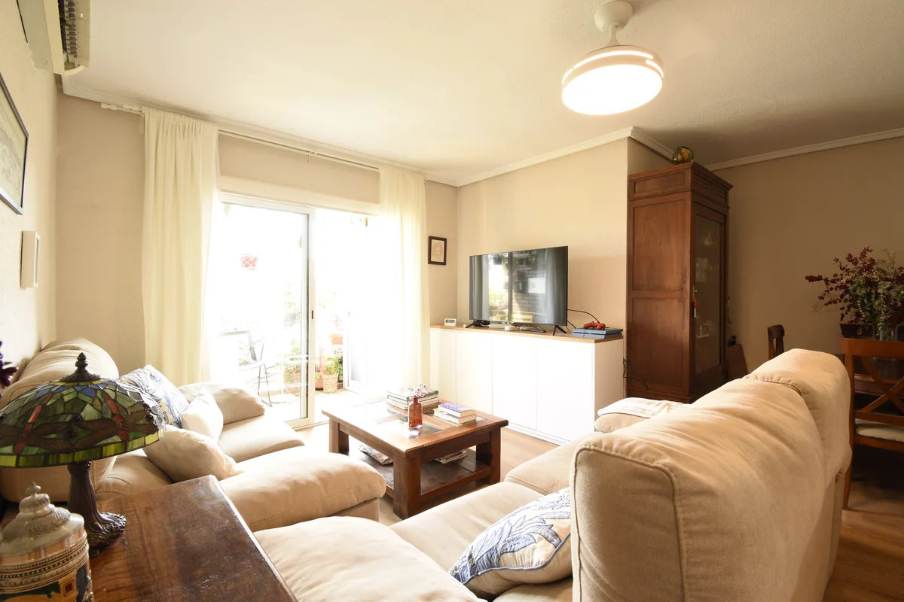
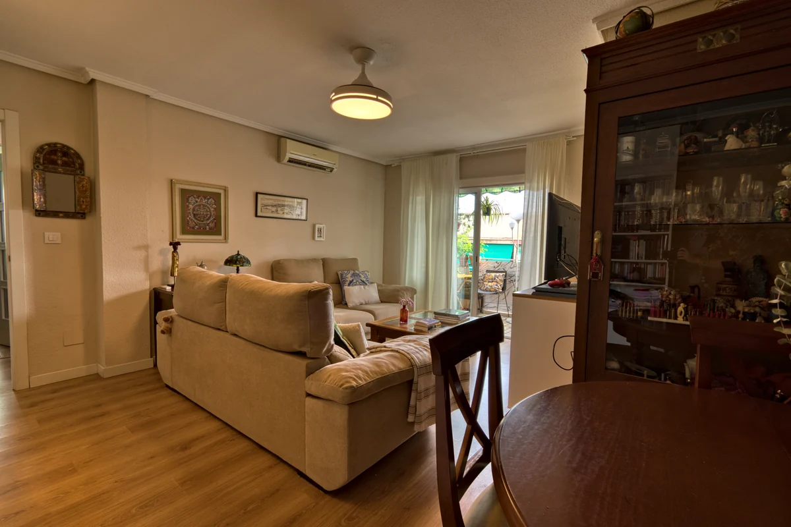
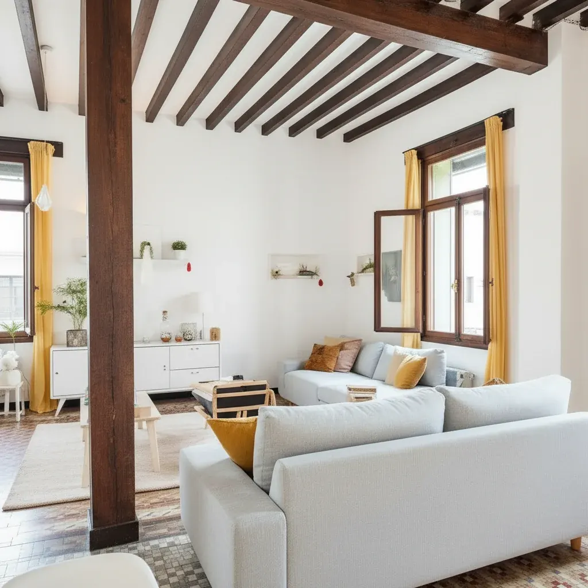
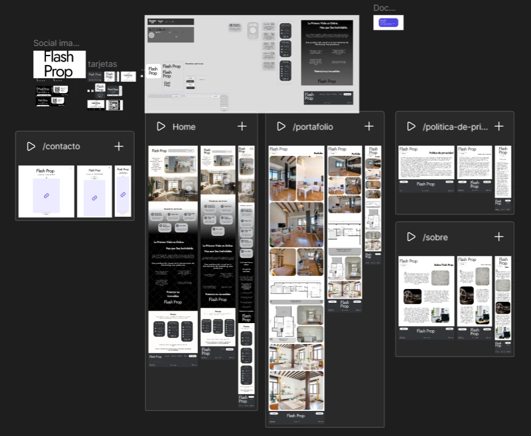

El porqué: un manotazo de ahogado
Había encaminado toda mi carrera hacia el comercio y las ventas. Estudié comercio internacional y estaba trabajando de comercial en una inmobiliaria. Y en algún punto me di cuenta de algo incómodo: no me gustaba vender. No me gustaba perseguir clientes. No me gustaba molestar a la gente. Simplemente no me gustaba.
Ahí estaba, dándome cuenta de que había apuntado mi carrera profesional a un callejón sin luz.
Un día tuve que ir a un piso de la cartera porque venía un tipo a hacer el plano. El tipo llegó, escaneó el departamento con el celular, y a los diez minutos ya se había ido. Y ahí se me prendió algo. Siempre me gustó la arquitectura —de chico dibujaba planos por diversión— y siempre me gustó la fotografía: tenía una cámara profesional comprada años antes, cuando el hobby estaba en su pico.
Pensé: puedo ofrecer un servicio así. Y lo puedo impulsar con IA.
Así que armé el primer sitio en Figma, hice un par de cursos de fotografía de interiores, definí el producto y la identidad de marca, imprimí mil tarjetas y salí a hacer lo único que ya sabía hacer: puerta fría, inmobiliaria por inmobiliaria, dejando tarjetas.
El problema: el negocio era yo
Funcionó. Tuve contactos y tuve tracción. Pero me consumía muchísimo tiempo: estaba trabajando, estaba Kio, estaba Flash Prop, y mi vida y mi novia también pedían atención.
El problema no era conseguir clientes. El problema era que cada entrega pasaba por mis manos — y eso significaba que el techo del negocio era mi cantidad de horas. Un servicio que no puede crecer más allá de las manos de su fundador no es un negocio, es un autoempleo.
La decisión central: editar el sistema, no las fotos
Construí un pipeline de edición: se suben las fotos crudas, y con un criterio de edición propio, editable, el sistema las procesa y las entrega.
Ese momento fue el que me cambió la cabeza. Pasé de editar fotos a editar el sistema que editaba las fotos. El trabajo dejó de estar en cada pieza y pasó a estar en las reglas que gobiernan todas las piezas — que es, creo, la diferencia entre hacer un oficio y diseñar un producto.

Base — el archivo tal como sale de la cámara

Entregada — después del pipeline, con la marca del cliente
Y el criterio no quedó en mi cabeza: quedó escrito. Por cada foto, el sistema genera su propio perfil de edición — un archivo que declara exposición, curvas, saturación, balance y nitidez. Cuarenta y cuatro archivos para cuarenta y cuatro fotos, cada uno distinto según lo que esa imagen necesitaba.
[Exposure] Compensation=0.5 Brightness=10 Contrast=-5 Saturation=10 Black=-5 [Luminance Curve] Enabled=true [Vibrance] Enabled=true [Sharpen] Enabled=true Amount=55 Contrast=50 [WB] Enabled=true Temperature=0
Por qué dos agentes y no uno
Empecé con un agente. Y fue el propio sistema el que pidió contraste: hacer el trabajo y auditarlo al mismo tiempo es pedirle a la misma mirada que se corrija a sí misma, y eso no funciona.
Así que agregué una segunda capa. El primer agente diagnostica y aplica los ajustes de cada imagen; el segundo audita el conjunto completo —no cada pieza suelta— y emite un veredicto: aprobado, corregir, o rechazar. La diferencia importa: una foto puede estar bien y el conjunto estar mal. La coherencia entre piezas es un juicio distinto del juicio sobre cada pieza, y por eso necesita otra mirada.
Todo esto con skills y criterios de edición aplicables, para que el conocimiento del oficio quedara escrito en el sistema en vez de en mi cabeza.
El pipeline no solo corregía: generaba
Una vez que el sistema editaba solo, el paso siguiente era obvio. Si puede corregir una foto, puede producir algo que antes no existía.
Video a partir de fotos fijas
Los tours en video salían de las mismas fotos ya editadas: cada imagen se convertía en un clip corto con un modelo de video, y después se ensamblaban. Probé varios modelos —Pixverse en dos versiones, Kling— comparando cuál sostenía mejor la geometría de un ambiente real, que es justo donde estos modelos fallan: en cuanto la cámara se mueve, las paredes se deforman.
Amueblar un espacio vacío
El otro salto fue el home staging: tomar la foto real de un ambiente y devolverla amueblada. Para una inmobiliaria eso es directo — un piso vacío vende mucho peor que uno amueblado, y amueblarlo de verdad cuesta semanas y dinero que nadie quiere gastar antes de vender.

El reposicionamiento: de productora visual a estudio digital
Con el tiempo noté algo que no había previsto: las inmobiliarias no necesitaban tanto un fotógrafo. Necesitaban un socio tecnológico — alguien que además les resolviera la web, la gestión, la presencia.
Ese es un aprendizaje que me llevo y que uso en todos mis proyectos: las necesidades de los clientes a veces no son las que ofreces. El producto no se ajusta en el escritorio, se ajusta escuchando. Pasé de productora visual a estudio digital, y la propuesta quedó bastante mejor.

El final, que no es un final feliz
Kio se puso muy serio y necesitaba mucho de mí. Así que, poco a poco, me fui alejando de Flash Prop: la migración del sitio a código quedó inconclusa, y hoy sigo solo con un puñado de clientes viejos que me contactan de vez en cuando.
No me arrepiento. Fue una decisión, no un fracaso: cuando dos proyectos propios compiten por las mismas horas, uno de los dos tiene que bajar la persiana, y elegí el que tenía más sentido a largo plazo.
Qué aprendí
Aprendí muchísimo en el camino — Mucho Figma, porque todo el proyecto fue design first, hasta el trato con clientes, pasando por IA, procesos automatizados y, cómo no, fotografía de interiores.
Tambien que el trabajo interesante no está en producir la pieza, está en diseñar el criterio que la produce. Que el sistema te va a pedir las piezas que le faltan si lo escuchás — el segundo agente no estaba en ningún plan, lo pidió el proceso. Y que un cliente no siempre te compra lo que le ofrecés, te compra lo que necesita: la diferencia entre esas dos cosas suele ser todo el negocio.
Y un aprendizaje de oficio, muy terrenal: la iluminación importa muchísimo. Mucho ojo con dejarte alguna luz apagada en la sesión — me pasó más veces de las que me gustaría.